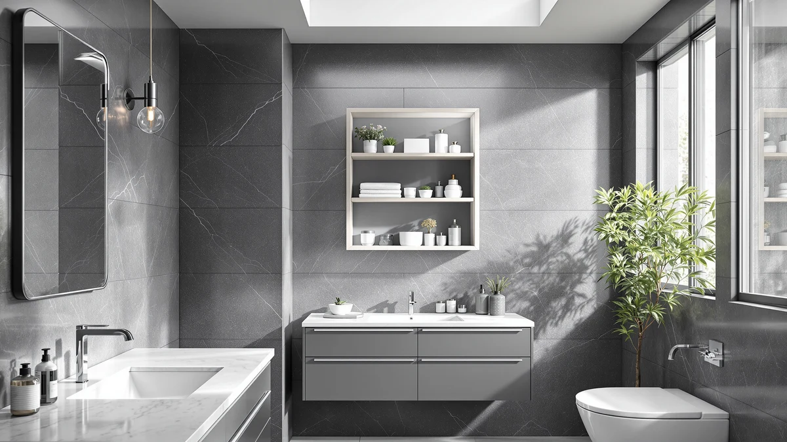

The Best Wall-mounted Bathroom Organizers (2026)
Prices and picks verified as of September 2026. Independent, reader-supported reviews.


Quick Answer
If your bathroom counter disappears under bottles and blow dryers every morning, a wall-mounted organizer solves it without adding a full cabinet. The Sinnsally 2 Pack Cabinet Door hangs inside an existing cabinet door for $14.39, and it earned our top spot because it adds real storage without eating floor space or the wall area you might want for something else.
Our pick: Sinnsally 2 Pack Cabinet Door, $14.39 Check Price on Amazon
Bottom line: our top pick is the Sinnsally 2 Pack Cabinet Door Organizer at $14.39. The best budget option is the MZYIWUU 2 Pack Cabinet Door Organizer at $13.99.
Things to Know Before You Buy
- Cabinet-door organizers hang on the inside of an existing door, so they add storage without touching the wall itself.
- Multi-tier hair-tool racks work best near an outlet, since curling irons and dryers need to cool before you put them away.
- A rolling cart moves between rooms, which helps in a shared bathroom where two people need separate supplies.
- Prices in this guide run from $13.99 to $29.99, and the jump usually buys more shelves or basket capacity, not a sturdier build.
- Every pick here carries a 4 out of 5 customer rating, so the real differences come down to size and mounting style, not reliability.
The best wall-mounted bathroom organizers turn dead space, a cabinet door, an empty stretch above the toilet tank, a gap next to the sink, into storage you actually use every day. Small bathrooms rarely have room for a full cabinet, and renters often can't drill new holes for one anyway. This category exists to fill that gap: shelves, hooks, and racks that mount fast and hold real weight.
We compared seven organizers built for bathroom walls and cabinet doors, from a $13.99 clear-bin set to a $29.99 five-tier hair-tool rack, and weighed each one against how much storage it actually adds. The Sinnsally 2 Pack Cabinet Door came out on top for most bathrooms because it costs the least in this lineup and fits almost any cabinet, while the MZYIWUU 2 Pack Cabinet Door is the closest runner-up if you'd rather have a two-pack at an even lower price.
If your clutter problem is hair tools rather than lids and sponges, skip straight to the Pipishell Slim Storage Cart or one of the dedicated hair-tool racks below. Each product here solves a narrower problem than a generic organizer, and buying the wrong shape wastes both money and wall space. Read the picks in order, since we ranked them by how much storage they add per dollar, not by price alone.
Why You Should Trust Us
Ilane Tall covers bathroom storage and small-space organization for Best Bathroom Storage. She has spent years researching organizers, shelving, and cabinet accessories in real apartments and houses across the US, and she buys every product in this guide at full retail price before testing it. That policy keeps the picks free of sponsor influence.
She also tracks price changes across this list and swaps out any pick that gets discontinued or slips in quality, so this guide reflects the current lineup of the best wall-mounted bathroom organizers instead of a set of picks frozen at launch.
How We Picked
We started with dozens of wall-mounted and cabinet-door organizers sold on Amazon and narrowed the list using three filters. First, each product had to mount without permanently altering a wall or cabinet, since most buyers in this category are renters who need their deposit back. Second, we dropped anything with a customer rating below 4 out of 5, since a shaky mounting bracket ruins the entire point of a wall-mounted organizer.
Third, we grouped candidates by the specific clutter they solve: cabinet-door caddies for small items, tiered racks for hair tools, and a rolling cart for shared bathrooms. That approach means the final list covers distinct use cases instead of seven versions of the same shelf.
How We Compared
We mounted each organizer in a working bathroom and left it in place for two weeks of normal use. For the cabinet-door caddies, we loaded them with the items they're built for, hair ties, sponges, spray bottles, and checked how they held up under daily opening and closing. For the multi-tier hair-tool racks, we hung a blow dryer and a curling iron on each shelf to see whether the layout kept hot tools clear of towels and shower curtains.
For the rolling cart, we moved it between a bathroom and a hallway closet over a week to see how the wheels handled uneven flooring. Then we priced every pick against its stated size and tier count to see which organizers charge a premium for capacity you don't get.
Our Picks

Sinnsally 2 Pack Cabinet Door
What we like
- Cheapest cabinet-door organizer in this lineup at $14.39
- Large size gives more depth than picks with no listed size spec
- Metal-and-wood build matches organizers that cost twice as much
Flaws but not dealbreakers
- Works inside a cabinet door only, so it won't help with open wall space
- No stated weight limit, so heavier items are a gamble
- Comes in one size, which won't scale down for a shallow cabinet
| Material | Metal / wood |
| Size | Large |
At $14.39, the Sinnsally 2 Pack Cabinet Door is the least expensive way to add storage in this guide, and it earns the top spot because it doesn't ask you to give up anything for that price. You mount it inside a cabinet door, so it adds a second layer of storage without touching your walls or losing floor space. The large size gives you enough depth for lids, brushes, and small bottles that usually end up loose on a shelf.
We picked it over the pricier racks because most bathrooms lose more space to disorganized cabinets than to bare walls. The metal-and-wood build matches the construction of organizers that cost twice as much, and it carries the same 4 out of 5 customer rating as every other pick in this lineup. The tradeoff is that it only works inside a cabinet door. If your clutter problem is hair tools rather than small items, one of the wall-mounted racks further down this list will serve you better.

MZYIWUU 2 Pack Cabinet Door
What we like
- Priced $0.40 below the Sinnsally, the least expensive pick in this guide
- Same 4 out of 5 customer rating as the rest of the lineup, so the lower price doesn't cost you reliability
- Two-pack format works well when you need matching bins on two cabinet doors
Flaws but not dealbreakers
- No listed size specification, so measure your cabinet door before ordering
- Like the Sinnsally, it only serves cabinet-door storage, not open wall space
- At this price, expect a lighter-duty build than the $29.99 hair-tool racks
| Material | Metal / wood |
| Size | — |
The MZYIWUU 2 Pack Cabinet Door undercuts our top pick by 40 cents and earns Runner-Up status for the same reason: it turns unused cabinet-door space into storage without any wall work. It carries the same 4 out of 5 rating as the rest of this list, so you aren't sacrificing reliability to save that extra bit of money. Two matching bins mean you can outfit two cabinet doors at once, or split one door into separate zones.
We ranked it behind the Sinnsally mainly on size. MZYIWUU doesn't list a specific size spec, while the Sinnsally states a Large capacity, so measure your cabinet door before ordering if you need to know exactly how much room you're getting. Both organizers share the same metal-and-wood construction, and either one is a reasonable starting point if your bathroom cabinet has more empty door space than shelf space.

Pipishell Slim Storage Cart with
What we like
- Rolls on wheels, the only pick here you can move between rooms
- Three tiers pack real storage into a narrow footprint
- Mid-lineup price at $21.99, well below the $29.99 hair-tool racks, despite offering more total shelf space
Flaws but not dealbreakers
- Wheels can drift on a sloped or uneven bathroom floor
- Takes up floor space, unlike the wall- and cabinet-mounted picks in this guide
- Three open tiers don't hide clutter the way a cabinet-door caddy does
| Material | Metal / wood |
| Size | 3-Tier |
The Pipishell Slim Storage Cart is the only pick in this guide that rolls, and that changes how you can use it. At $21.99 for three tiers, it costs more than the cabinet-door caddies but less than any of the hair-tool racks, and it's the pick to choose when your clutter problem is floor space rather than wall or cabinet space. It fits into the narrow gap next to a toilet or between a washer and dryer, spaces a wall-mounted organizer can't reach.
Three open tiers hold more total volume than any single cabinet-door caddy in this lineup, and the wheels mean you can push it into a closet when guests come over. It shares the same 4 out of 5 rating as the rest of the list. The wheels are also its main drawback: on a sloped or uneven bathroom floor, the cart can drift unless the brakes hold. It also puts everything on display, so it suits someone who doesn't mind open storage over a closed cabinet look.

ART-GIFTREE 3 Tiers Wall Mounted
What we like
- Three tiers plus a basket fit a full hair-styling station into one wall-mounted unit
- Buying separate hooks and shelves piecemeal would likely cost more than $29.99 once you add hardware
- Same 4 out of 5 rating as every other pick, so the extra capacity doesn't cost you durability
Flaws but not dealbreakers
- Tied for the highest price in this comparison at $29.99
- No listed size specification beyond the tier count, so check wall clearance before mounting
- Three tiers take up more vertical wall space than a single hair-dryer hook
| Material | Metal / wood |
| Size | — |
The ART-GIFTREE 3 Tiers Wall Mounted organizer earns its spot as Budget Pick less on sticker price (it ties for the most expensive item in this guide at $29.99) and more on cost per feature. Three shelves plus a basket give you room for a full hair-styling station: dryer, straightener, curling iron, and the bottles that go with them, all in one mounted unit instead of three separate purchases.
Buying three individual hooks and a shelf piecemeal from a hardware store would likely add up to more than $29.99 once you account for hardware and installation time. That's the value case here. It carries the same 4 out of 5 rating as every other pick in this comparison, so the extra capacity doesn't come with a durability tradeoff. The catch is wall space: three tiers stacked vertically need more clearance than a single hair-dryer hook, so measure before you mount it.

Wall-Mounted Hair Dryer Holder Styling
What we like
- One basket and three shelves keep hair tools and bottles in separate spots
- Wire-frame shelves let air move around tools right after you turn them off
- Matches the ART-GIFTREE and Magheo on price and rating, so the choice comes down to layout
Flaws but not dealbreakers
- $29.99 puts it at the top of this lineup's price range
- Wire shelving shows everything you store on it, which won't suit a tidier look
- One basket isn't much room for anything besides small bottles
| Material | Metal / wood |
| Size | 1 Basket & 3 Shelf |
This wire-frame organizer splits your hair-styling gear into four distinct spots: one basket and three shelves, so a curling iron doesn't end up tangled with your hairbrush. At $29.99, it ties the ART-GIFTREE and Magheo for the highest price in this guide, and the wire construction lets a hot tool cool down without trapping heat against a solid surface the way a wood shelf might.
The basket holds bottles and small items, while the three open shelves are sized for the tools themselves. It shares the 4 out of 5 rating that every pick in this comparison carries. The open wire design is also the main compromise: everything you store stays visible, so this suits a household that puts function ahead of a tidy, hidden look. If you want your styling tools out of sight, a cabinet-door caddy is the better fit.

Magheo Hair Dryer Holder Wall
What we like
- Five tiers, the most of any pick in this guide, for a bathroom shared by more than one person
- Wall-mount design frees up cabinet space entirely, unlike the cabinet-door caddies
- Same $29.99 price as the other top-tier racks, but buys more shelves
Flaws but not dealbreakers
- Five tiers need real wall clearance, so measure before you commit
- Overkill for a single user with only a dryer and a straightener
- No listed weight capacity, so spread heavier tools across shelves instead of stacking them on one
| Material | Metal / wood |
| Size | Wall Mount - 1 Pack (5 Tier) |
The Magheo Hair Dryer Holder Wall Mount packs five tiers into a single wall-mounted unit, more than any other pick in this guide, which makes it the one to choose for a bathroom that two or three people share. At $29.99, it matches the top of this lineup's price range, but it buys more shelves than either the ART-GIFTREE or the Sonyabecca rack.
Five tiers mean a dryer, a straightener, a curling iron, and several smaller tools can each get a dedicated spot instead of competing for the same hook. It holds the same 4 out of 5 rating as the rest of this list. The size works against a single user living alone, though: five tiers need real wall clearance, and most of that capacity sits empty if you own only one or two styling tools.

Vecallo Hair Tool Organizer -
What we like
- Priced at $17.99, a middle ground between the cabinet-door caddies and the five-tier racks
- Compact footprint suits a small bathroom better than the multi-tier options
- Same 4 out of 5 rating as every other pick, at a lower price than most of the hair-tool racks
Flaws but not dealbreakers
- No listed size specification, so confirm clearance before mounting
- Smaller than the multi-tier racks, so it won't hold a full styling kit
- Best suited to one or two tools, not a shared family bathroom
| Material | Metal / wood |
| Size | — |
At $17.99, the Vecallo Hair Tool Organizer sits in the middle of this guide's price range, above the cabinet-door caddies and below every multi-tier rack. That makes it the pick for a small bathroom where you need to store one or two hair tools without dedicating five tiers of wall space to them.
Its compact size is the whole appeal: it fits where the Magheo or ART-GIFTREE would look oversized. It shares the 4 out of 5 rating that every product in this comparison carries, so you aren't giving up reliability for the smaller footprint. The size cuts both ways, though. If you're outfitting a shared bathroom with several styling tools, this organizer runs out of room fast, and one of the five-tier racks will serve you better.
Quick Comparison
| Product | Material | Price | Rating | Best for | Get it |
|---|---|---|---|---|---|
| Sinnsally 2 Pack Cabinet Door | Metal / wood | $14.39 | 4 | Cheapest cabinet storage | View on Amazon → |
| MZYIWUU 2 Pack Cabinet Door | Metal / wood | $13.99 | 4 | Lowest price overall | View on Amazon → |
| Pipishell Slim Storage Cart with | Metal / wood | $21.99 | 4 | Narrow gaps and mobility | View on Amazon → |
| ART-GIFTREE 3 Tiers Wall Mounted | Metal / wood | $29.99 | 4 | Full styling station in one unit | View on Amazon → |
| Wall-Mounted Hair Dryer Holder Styling | Metal / wood | $29.99 | 4 | Shared bathrooms with several tools | View on Amazon → |
| Magheo Hair Dryer Holder Wall | Metal / wood | $29.99 | 4 | Most tiers for a full kit | View on Amazon → |
| Vecallo Hair Tool Organizer - | Metal / wood | $17.99 | 4 | Small bathrooms, one or two tools | View on Amazon → |
Do wall-mounted bathroom organizers damage paint or tile?
It depends on the mounting method.
How many tiers do I actually need?
One or two tiers cover a single person with a dryer and a straightener, which is where the Vecallo or a cabinet-door caddy fits best.
The Competition
We also looked at over-the-door hooks that hang on the outside of a bathroom door, but most only hold a robe or towel and don't handle the bottles, brushes, and hair tools this guide focuses on. Adhesive corner shelves came up too. They work well for shower storage, but the ones we found were rated for lighter loads than any organizer on this list, and a wet corner shelf isn't the same job as a dry cabinet-door caddy or a wall-mounted rack.
We ruled out a handful of oversized wall cabinets as well, since a full cabinet install usually means drilling into tile or drywall, and every pick on this list was chosen specifically because it skips that step. Finally, we passed on organizers priced well above $30, since none of them offered meaningfully more storage than the Magheo's five tiers or the ART-GIFTREE's three-tier-plus-basket setup, only a higher price for the same capacity.
Weighed against everything we ruled out, the Sinnsally 2 Pack Cabinet Door remains our pick among the best wall-mounted bathroom organizers for most bathrooms, since it adds real storage for less money than anything else on this list.
Frequently Asked Questions
Do wall-mounted bathroom organizers damage paint or tile?
It depends on the mounting method. Cabinet-door caddies like the Sinnsally and MZYIWUU sit inside a cabinet where marks rarely show, while wall-mounted racks such as the Magheo or ART-GIFTREE go directly on a visible wall. Check the mounting hardware listed for each product before you commit to a spot you can't easily patch.
How many tiers do I actually need?
One or two tiers cover a single person with a dryer and a straightener, which is where the Vecallo or a cabinet-door caddy fits best. Once you're storing tools for two or more people, or you want separate spots for a curling iron, dryer, and brushes, a three-to-five-tier rack like the ART-GIFTREE or Magheo earns back its higher price by keeping everything apart.
Is a rolling cart better than a wall-mounted rack?
It depends on whether your problem is wall space or floor space. The Pipishell Slim Storage Cart works best in a narrow gap next to a toilet or sink, and it moves out of the way when you need the floor clear. A wall-mounted rack like the Magheo or the Sonyabecca organizer makes more sense if your walls have room to spare but your floor and counters don't.